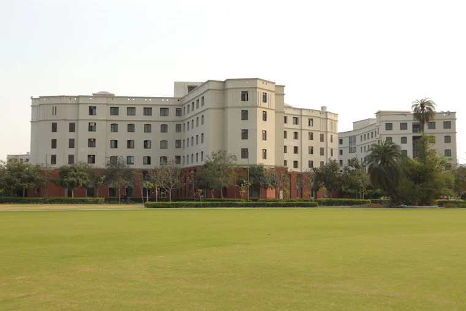

Free guide · Study in Germany
Studying in Germany without tuition fees — and where that stops being true
Most public universities in Germany charge international students no tuition. But there are real costs, real exceptions, and one rule about Class 12 certificates that catches out a lot of Indian families.
Last checked 30 September 2026
Read this first
An Indian Class 12 certificate alone does not get you into a German bachelor's degree
According to DAAD India, students with only a Class 12 certificate cannot be admitted directly. The routes in are:
- A valid JEE Advanced result, for a subject-specific application
- One completed year of a bachelor's degree in India, for subject-specific admission
- Studienkolleg — a foundation year in Germany ending in an exam called the Feststellungsprüfung. It is taught in German, and DAAD India puts the level needed at about B1
For master's degrees this does not apply — an Indian bachelor's degree is the usual entry route.
What “free” means
No tuition is not the same as no cost
Semester contribution
Every student pays this each semester. It covers student services and often a local transport ticket. DAAD puts it at €70–430 depending on the university.
Living costs
DAAD estimates €900–1,200 a month for most students, depending on the city. Munich and other large cities sit at the top of that range or above it.
Money you must show
For the student visa you must prove €992 a month — €11,904 for a year — usually in a blocked account. Providers charge set-up and monthly fees on top.
Where you will pay tuition
The exceptions, and why the state you pick matters
Baden-Württemberg
The whole state charges non-EU students tuition at public universities.
- €1,500 per semester for students from outside the EU/EEA
- Covers universities such as Heidelberg, Stuttgart, Freiburg, Mannheim and Karlsruhe
- Doctoral students are exempt, as are some exchange students
TUM, Bavaria
The Technical University of Munich charges non-EU students tuition. Bavarian law lets universities set their own fees.
- Bachelor's: usually €2,000 or €3,000 per semester
- Master's: usually €4,000 or €6,000 per semester
- Applies to non-EU students enrolling from winter semester 2024/25
- A few programmes are exempt — check the programme page
Private universities in Germany charge full tuition everywhere. They are a different decision and should be compared on cost like any other paid option.
Steps for Indian applicants
The paperwork, in order
APS certificate
Mandatory for Indian applicants to degree courses in Germany, and needed before the visa. The fee is ₹18,000, non-refundable. Allow 3–4 weeks, and longer in peak season.
Applications
DAAD India suggests researching in October–November, starting APS in January–March, and applying in March–June for a winter-semester start. Each programme sets its own deadline.
Visa and blocked account
Admission letter, blocked account, health insurance and APS certificate go into the visa application.
Work and staying on
What the rules allow
While you study
- Up to 140 full days or 280 half days of work a year
- Student assistant jobs at your own university may be counted differently — ask the university's international office
- Part-time work helps with living costs but is not enough to fund a degree on its own
After you graduate
- An 18-month residence permit to look for work
- You can work in any job during those 18 months
- It cannot be extended — you need a qualifying job to move on to a work permit or EU Blue Card
Questions families ask
Straight answers
Are courses taught in English?
Some. DAAD India counts around 300 English-taught courses against around 2,000 in German. English-taught options are far more common at master's level. For a bachelor's, plan on learning German.
Is Germany cheaper than the UK or the US?
On tuition, usually by a wide margin. On living costs, less so — Munich is not cheap. Add up the semester contributions, blocked account and living costs before you decide.
Does the blocked account count as a cost?
It is your money, released to you monthly to live on, so it is not a fee. But it has to be in place before the visa, which is a cash-flow problem for many families. The provider's fees are a real cost.
Can I study in a tuition-free state and avoid all fees?
You will still pay the semester contribution, and your costs depend heavily on the city. Outside Baden-Württemberg and the Bavarian universities that charge, most public universities charge non-EU students no tuition.
Sources
Where these facts come from
Last checked 30 September 2026. Rules and fees change, sometimes mid-year. Before you act on anything here, confirm it with the university or the official source below.
Want help with a Germany application?
Our guides are free to use on your own. One-to-one application support is a paid service, with the fee agreed in writing before any work starts.
Talk to us on WhatsApp